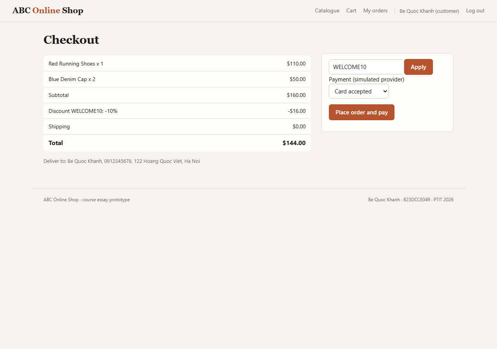

Phân tích và thiết kế hệ thống thông tin · PTIT 2026
Từ một bài toán kinh doanh đến mã chạy được. Mỗi bước đều lần ngược lại được.
ABC Online Shop là một cửa hàng trực tuyến vừa và nhỏ bán giày, túi, áo, mũ và đồng hồ. Vấn đề của shop không phải thiếu website mà là thông tin rời rạc và chậm: dữ liệu sản phẩm khác nhau ở nhiều nơi, tồn kho lệch so với kho thật, trạng thái thanh toán và giao hàng được nhập tay, báo cáo đến muộn hơn quyết định. Hệ thống giải quyết các nguyên nhân gốc này: một nguồn dữ liệu sản phẩm, tồn kho ghi bằng sự kiện, trạng thái đơn theo máy trạng thái, mỗi trao đổi với đối tác có mã tham chiếu duy nhất, và báo cáo tính từ dữ liệu vận hành.
Mục tiêu và phạm vi
- Khách tìm sản phẩm bằng chữ, giọng nói (bản ghi) hoặc ảnh; xem thông số theo nhóm sản phẩm; đặt hàng, thanh toán, theo dõi đơn.
- Nhân viên bán hàng xử lý đơn, nhân viên kho ghi sự kiện tồn kho và đóng gói, admin quản lý danh mục và duyệt đánh giá, quản lý xem báo cáo.
- Ba thành phần AI: tìm kiếm đa phương thức, tóm tắt đánh giá theo khía cạnh, gợi ý sản phẩm có xét tồn kho.
- Ngoài phạm vi: cổng thanh toán và hãng vận chuyển thật (được mô phỏng sau giao diện cố định).
Điểm nổi bật để trình bày
- Sơ đồ phân tích và thiết kế tách biệt rõ: CL01 → DCL01, SD01 → SD05.
- Dữ liệu đi đủ ba mức: CDM01 → LDM01 → ERD02 → design/create_tables.sql.
- Product chỉ giữ thuộc tính chung; thông số riêng ở bảng chi tiết theo Category (góp ý của thầy).
- Database và khung code được sinh từ mô hình rồi đối chiếu tự động với ứng dụng.
B · Quy trình
Quy trình phát triển
Mỗi pha dùng kết quả của pha trước. Khi viết code phát hiện mô hình sai, mô hình được sửa trước (ví dụ trường Customer.orders không có trong sơ đồ đã bị xoá khỏi code, không phải thêm vào sơ đồ).
Yêu cầu
Khảo sát (A01): bên liên quan STK01, quy trình BP01, cây vấn đề PT01, ngữ cảnh CTX01; 24 FR, 12 NFR, 32 use case.
Phân tích
Use case UC00, đặc tả UC08; activity AD01, DFD DFD0, sequence BCE SD01, class phân tích CL01, trạng thái ST01.
Cài đặt
Python, SQLite: model, dao, service, ai, controller, view; SQL và khung code sinh từ mô hình (design/create_tables.sql).
Kiểm chứng
45 test, build_db.py, check_code.py, evaluate.py, ảnh chụp demo; kết quả lưu trong demo_results và design.
C · Diễn tiến
Diễn tiến của mô hình qua các pha
Ba chuỗi, mỗi chuỗi đọc từ trái sang phải. Dưới mỗi chuỗi: điều gì thay đổi giữa các bước, vì sao, và thay đổi đó mang lại lợi ích gì. Bấm vào hình để mở kích thước đầy đủ; đoạn code là trích nguyên văn từ mã nguồn, bấm để mở đúng dòng.
1. Lớp phân tích → lớp thiết kế → code
Product và chi tiết theo danh mục, phần thầy góp ý

Thay đổi gì
- thuộc tính thành trường có kiểu:
capacity_l: float,battery_days: Optional[int] - trách nhiệm thành phương thức:
spec_rows()cho trang sản phẩm,search_terms()cho tìm kiếm Category.detail_kindchọn một trong bốn lớp chi tiết- liên kết lưu trữ giữa các aggregate thành khoá, ví dụ
Cart.customer_id
Vì sao
- thuộc tính riêng của từng nhóm hàng không dồn vào Product: không có cột rỗng, mỗi nhóm có ràng buộc riêng
- quy tắc BR-CAT-01 (chi tiết phải đúng loại của danh mục) nằm cạnh dữ liệu nó kiểm tra: CatalogService.save_product
- đối tượng ở aggregate khác được DAO khác nạp, nên chỉ giữ khoá
Lợi ích
- trang sản phẩm hiện bảng thông số đúng nhóm mà view không cần if theo loại
- tìm kiếm AI tìm được theo chất liệu, dung tích… nhờ Product.search_text
- thêm nhóm hàng mới là thêm một lớp con và một bảng: test_each_product_loads_the_detail_kind_of_its_category
2. Sequence phân tích → sequence thiết kế → lúc chạy
UC08 Place Order / Checkout.png)
.png)


Thay đổi gì
- control của phân tích tách thành OrderController.checkout (HTTP, session, form) và CheckoutService (quy tắc nghiệp vụ)
- entity được truy cập qua DAO; tầng lưu trữ hiện rõ trên sơ đồ
- thông điệp 3–4 của SD05: tra idempotency key trước khi tạo đơn (luồng A7, gửi lại form)
- thông điệp 8–10 nằm trong Database.transaction
Vì sao
- tầng phân tích không biết HTTP hay SQL; tầng thiết kế thì phải biết
- tạo đơn và giữ hàng phải cùng thành công hoặc cùng không
- khách bấm hai lần không được tạo hai đơn; đối tác thanh toán chỉ được gọi sau khi transaction commit
Lợi ích
- gửi lại form trả về đúng đơn cũ: test_repeated_submission_returns_the_same_order
- thanh toán bị từ chối thì trả hàng giữ chỗ và giữ nguyên giỏ: test_declined_payment_releases_reservation_and_keeps_cart
- đối tác không bao giờ nhận yêu cầu cho một đơn không tồn tại
3. Khái niệm → logic → vật lý → database
Từ đặc tả đến schema, chi tiết sản phẩm theo danh mục

Thay đổi gì
- CDM chỉ có thực thể; LDM thêm khoá và cột; ERD thêm kiểu SQL, CHECK, DEFAULT
- User và Customer gộp một bảng
userscó cộtrole - chi tiết sản phẩm theo kiểu class-table: bốn bảng
*_detailvàcategory.detail_kind
Vì sao
- mỗi mức chỉ trả lời một câu hỏi: có gì, liên kết bằng khoá nào, lưu bằng kiểu gì
- lớp con Customer không thêm cột nào cần bảng riêng
- một bảng Product chứa mọi thuộc tính sẽ đầy cột rỗng và không đặt được NOT NULL cho từng nhóm
Lợi ích
- 23 bảng, 22 khoá ngoại sinh từ mô hình; 21/23 bảng giống hệt abc_shop/dao/schema.sql
- chênh lệch còn lại được build_db.py nêu rõ: 2 khoá UNIQUE ghép và 4 trigger mà ERD không vẽ được
- database sinh ra chạy được ứng dụng và chặn đủ 6/6 câu lệnh sai ràng buộc
Tất cả sơ đồ
35 sơ đồ của dự án VP
Tất cả được vẽ trong Visual Paradigm (dự án TieuLuan_KHANHBQ.vpp) và xuất ảnh bằng Visual Paradigm Community Edition. Ba sơ đồ DFD được vẽ lại từ chính bố cục lưu trong dự án vì bản CE không mở được DFD. Bấm vào ảnh để phóng to, phím ← → để chuyển.
Nghiệp vụ và yêu cầu (9)


Phân tích (9)
.png)
.png)


.png)

AI trong thương mại điện tử (5)


Dữ liệu (4)


Thiết kế (8)


D · Truy vết
Từ yêu cầu đến mã và test
Bốn nghiệp vụ trọng tâm. Mỗi ô mở đúng sơ đồ, đúng hàm (có số dòng) hoặc đúng test.
UC08 Đặt hàng / Checkout
| Yêu cầu | FR08–FR10, NFR07 (không trùng đơn), BR: giữ hàng khi tạo đơn |
|---|---|
| Phân tích | Đặc tả UC08 (luồng chính, A1–A7, E1), AD01, SD01, DFD1, ST01 |
| Thiết kế | SD05, DCL01, PKG01 |
| Database | customer_order (UNIQUE idempotency_key), order_item, order_status_history, payment, inventory_event |
| Code | OrderController.checkout → CheckoutService.place_order → Order.create_from_cart → SqliteOrderDAO.save_order, InventoryService.reserve_order, PaymentService.request_payment |
| Test | test_successful_checkout_reserves_stock_pays_and_clears_cart, test_repeated_submission_returns_the_same_order, test_insufficient_stock_stops_checkout_without_side_effects, test_payment_callbacks_are_verified_and_idempotent |
UC07 Quản lý giỏ hàng (thêm sản phẩm)
| Yêu cầu | FR07; include UC30 Kiểm tra hàng còn |
|---|---|
| Phân tích | UCD2, CL01 (Cart ◆ CartItem) |
| Thiết kế | DCL04 (lát cắt view → controller → service → dao → model), DCL01 |
| Database | cart (UNIQUE customer_id), cart_item (khoá (cart_id, product_id)) |
| Code | OrderController.add_to_cart → CartService.add_item → Cart.add_item → SqliteCartDAO.update_cart |
| Test | test_cart_adds_to_an_existing_line_and_totals_the_lines, test_customer_buys_through_the_web |
UC06 Xem chi tiết sản phẩm (Category → bảng chi tiết)
| Yêu cầu | FR06; góp ý của thầy về Product/Category; BR-CAT-01 |
|---|---|
| Phân tích | CL01 (ProductDetail và 4 loại), CDM01 |
| Thiết kế | DCL03, LDM01, ERD02 |
| Database | category.detail_kind, product, footwear_detail / apparel_detail / bag_detail / watch_detail, trigger *_detail_kind |
| Code | ShopController.product → CatalogService.product_detail → SqliteProductDAO._load_detail → ProductDetail.spec_rows |
| Test | test_product_page_shows_the_group_specific_attributes, test_service_rejects_a_detail_of_the_wrong_group, test_database_trigger_rejects_a_detail_of_the_wrong_group |
UC05 Tìm kiếm sản phẩm bằng AI
| Yêu cầu | FR05, AI-R1 đến AI-R4, AI-N3 (luôn có phương án không AI) |
|---|---|
| Phân tích | UC_AI, SD03, SD04 |
| Thiết kế | CMP01, PKG01 (package ai) |
| Database | product, bảng chi tiết (từ khoá), stock_level (S_business); VectorIndex trong bộ nhớ |
| Code | ShopController.search → QueryService.text_query → SearchService.search → RankingService.rank |
| Test | test_text_voice_and_price_filter, test_image_and_multimodal_search, test_search_uses_the_detail_attributes |
E · Dữ liệu
Thiết kế và sinh cơ sở dữ liệu
Category, Product và bảng chi tiết
Product chỉ giữ thuộc tính mọi sản phẩm đều có (tên, hãng, màu, giá, mô tả, ảnh, trạng thái). Thuộc tính riêng của từng
nhóm nằm ở một bảng chi tiết: footwear_detail, apparel_detail, bag_detail,
watch_detail, khoá chính product_id đồng thời là khoá ngoại tới product. Cột
category.detail_kind cho biết sản phẩm của danh mục dùng bảng chi tiết nào.
Quy tắc "dòng chi tiết phải đúng loại của danh mục" (BR-CAT-01) được kiểm hai lần: ở CatalogService.save_product và bằng trigger trong abc_shop/dao/schema.sql; test test_database_trigger_rejects_a_detail_of_the_wrong_group.
Phương án bị loại: một bảng Product có mọi cột (nhiều cột rỗng, không đặt được NOT NULL theo nhóm) và bảng EAV thuộc tính–giá trị (mất kiểu dữ liệu và ràng buộc).
Từ mô hình đến database
- Mô hình khái niệm CDM01: 19 thực thể, quan hệ và bội số.
- Mô hình logic LDM01: quan hệ, khoá, cột tuỳ chọn (N), duy nhất (U).
- Mô hình vật lý ERD01 và ERD02: tên và kiểu SQLite.
- Plugin essay.gen đọc mô hình vật lý trong VP, ghi design/create_tables.sql (23 bảng, 22 khoá ngoại).
- design/build_db.py tạo database từ script, so với schema của ứng dụng, nạp dữ liệu bằng chính ứng dụng và thử 6 câu lệnh vi phạm.
Menu Tools › DB › Generate Database của VP Enterprise cần cấu hình driver trong dự án; lệnh qua API báo "Dialect class not found", nên chưa có ảnh chụp quy trình của menu này. Các bước để làm trực tiếp trước thầy có trong README.
Một phần script sinh từ ERD
CREATE TABLE category (
category_id VARCHAR(40) NOT NULL,
name VARCHAR(200) NOT NULL,
detail_kind VARCHAR(40) NOT NULL CHECK (detail_kind IN ('footwear','apparel','bag','watch')),
PRIMARY KEY (category_id)
);
CREATE TABLE product (
product_id VARCHAR(40) NOT NULL,
name VARCHAR(200) NOT NULL,
category_id VARCHAR(40) NOT NULL,
brand VARCHAR(200) NOT NULL,
color VARCHAR(200) NOT NULL,
price DECIMAL(10,2) NOT NULL CHECK (price > 0),
description VARCHAR(1000) NOT NULL DEFAULT '',
image VARCHAR(200) NOT NULL DEFAULT '',
status VARCHAR(40) NOT NULL DEFAULT 'active' CHECK (status IN ('active','unpublished')),
PRIMARY KEY (product_id),
FOREIGN KEY (category_id) REFERENCES category (category_id)
);
CREATE TABLE customer_order (
order_id VARCHAR(40) NOT NULL,
customer_id VARCHAR(40) NOT NULL,
address VARCHAR(1000) NOT NULL,
discount DECIMAL(10,2) NOT NULL DEFAULT 0,
shipping_fee DECIMAL(10,2) NOT NULL DEFAULT 0,
total DECIMAL(10,2) NOT NULL CHECK (total > 0),
status VARCHAR(40) NOT NULL,
created_at TIMESTAMP NOT NULL,
promo_code VARCHAR(40) NOT NULL DEFAULT '',
idempotency_key VARCHAR(40) UNIQUE,
PRIMARY KEY (order_id),
FOREIGN KEY (customer_id) REFERENCES users (user_id)
);
CREATE TABLE cart (
cart_id VARCHAR(40) NOT NULL,
customer_id VARCHAR(40) NOT NULL UNIQUE,
PRIMARY KEY (cart_id),
FOREIGN KEY (customer_id) REFERENCES users (user_id)
);
CREATE TABLE address (
customer_id VARCHAR(40) NOT NULL,
receiver VARCHAR(200) NOT NULL,
phone VARCHAR(200) NOT NULL,
street VARCHAR(200) NOT NULL,
city VARCHAR(200) NOT NULL,
PRIMARY KEY (customer_id),
FOREIGN KEY (customer_id) REFERENCES users (user_id)
);
CREATE TABLE watch_detail (
product_id VARCHAR(40) NOT NULL,
movement VARCHAR(40) NOT NULL CHECK (movement IN ('smart','quartz','automatic')),
strap VARCHAR(200) NOT NULL,
water_resistance_m INTEGER NOT NULL CHECK (water_resistance_m >= 0),
battery_days INTEGER,
PRIMARY KEY (product_id),
FOREIGN KEY (product_id) REFERENCES product (product_id)
);
CREATE TABLE bag_detail (
product_id VARCHAR(40) NOT NULL,
capacity_l DECIMAL(10,2) NOT NULL CHECK (capacity_l > 0),
material VARCHAR(200) NOT NULL,
laptop_sleeve INTEGER NOT NULL DEFAULT 0 CHECK (laptop_sleeve IN (0, 1)),
PRIMARY KEY (product_id),
FOREIGN KEY (product_id) REFERENCES product (product_id)
);
Kết quả build_db.py
> python build_db.py
[1] create_tables.sql (generated from ERD01 + ERD02) executed: 23 tables, 22 foreign keys
address, apparel_detail, audit_log, bag_detail, cart, cart_item
category, customer_order, footwear_detail, inventory_event, order_item, order_status_history
payment, product, promotion, replenishment_request, review, sequence
shipment, shipment_milestone, stock_level, users, watch_detail
[2] Compared with abc_shop/dao/schema.sql: 21 of 23 tables identical (columns, NOT NULL, keys, foreign keys, UNIQUE, CHECK)
inventory_event: differs in UNIQUE (product_id, kind, reference)
review: differs in UNIQUE (customer_id, product_id, order_id)
4 triggers (detail row of the category's kind, BR-CAT-01) exist only in schema.sql
[3] The application seeded one month of history into the generated database:
users=8, product=16, customer_order=16, order_item=25,
payment=16, shipment=10, inventory_event=60, review=14
first order: O001 of Be Quoc Khanh, 2 line(s), total 145.00, payment Succeeded, shipment DELIVERED
[4] Rules the database enforces by itself:
rejected: order line for a product that does not exist -> FOREIGN KEY constraint failed
rejected: second cart for the same customer -> UNIQUE constraint failed: cart.customer_id
rejected: more reserved than physical stock -> CHECK constraint failed: reserved >= 0 AND reserved <= physi
rejected: review rating 6 -> CHECK constraint failed: rating BETWEEN 1 AND 5
rejected: repeated idempotency key (double submit) -> UNIQUE constraint failed: customer_order.idempotency_key
rejected: user with an unknown role -> CHECK constraint failed: role IN ('customer','sales','wareho
6 of 6 rejected
AI
AI trong hệ thống (Chương 3)
Tìm kiếm đa phương thức
Câu hỏi bằng chữ hoặc bản ghi giọng nói được QueryService tách từ khoá, giá, màu; ảnh được ImageService mã hoá thành vector. RankingService xếp hạng theo S = α·S_text + β·S_image + γ·S_business, trong đó S_business ưu tiên hàng còn trong kho. Sơ đồ CMP01, SD03, SD04.
Tóm tắt đánh giá và gợi ý
ReviewInsightService tách mệnh đề, tìm khía cạnh (chất lượng, giá, giao hàng, dịch vụ), xử lý phủ định, loại đánh giá rác (AD04). RecommenderService kết hợp TF-IDF với mua chung và không bao giờ gợi ý hàng hết.
Kết quả evaluate.py
=== 1. Multimodal search === # Mode Query Top-1 result Score Success 1 text black shoes Nike Running Shoes 0.986 Yes 2 text white polo shirt White Polo Shirt 0.988 Yes 3 text find Nike shoes under 100 dollars Nike Court Sneakers 0.900 Yes 4 text red bag Red Canvas Backpack 0.987 Yes 5 text cheap watch under 60 Silver Analog Watch 0.542 Yes 6 text leather handbag Black Leather Bag 0.997 Yes 7 voice find running shoes Adidas Running Shoes 0.994 Yes 8 voice show me a blue cap Blue Denim Cap 1.000 Yes 9 voice i want a smart watch Black Smart Watch 0.985 Yes 10 image query_black_shoe.png Nike Running Shoes 0.955 Yes 11 image query_red_shoe.png Red Running Shoes 0.965 Yes 12 image query_white_shoe.png Adidas Running Shoes 0.906 Yes 13 image query_black_bag.png Black Leather Bag 0.982 Yes 14 image query_blue_cap.png Blue Denim Cap 0.990 Yes 15 image query_silver_watch.png Silver Analog Watch 0.905 Yes 16 image query_black_tshirt.png Black Cotton T-Shirt 0.987 Yes 17 multimodal running shoes + query_red_shoe.png Red Running Shoes 0.976 Yes 18 multimodal nike + query_white_shoe.png Nike Court Sneakers 0.844 Yes 19 text find my order O001 O001 - Yes 20 voice where is my latest order O016 - Yes 21 text white sneakers Adidas Running Shoes 0.994 No (expected P05) 22 voice blue smartwatch Blue Smart Watch 0.983 Yes 23 image query_red_cap.png Red Baseball Cap 0.964 Yes 24 image query_blue_backpack.png Blue Canvas Backpack 0.967 Yes 25 multimodal cap + query_blue_cap.png Blue Denim Cap 0.995 Yes 26 text find my order O002 (nothing) - Yes Total queries: 26 Successful: 25 Success rate: 96.2% Per mode: image 9/9, multimodal 3/3, order 3/3, text 6/7, voice 4/4 === 2. Review insights (aspect-based sentiment) === Reviews: 30 gold aspect labels: 39 predicted: 38 Aspect detection precision 0.97 recall 0.95 F1 0.96 Polarity accuracy on detected aspects: 35/37 = 0.95 Errors: - extra aspect quality "The price is too expensive for this quality." - missed aspect delivery "Good material but shipping took two weeks, very slow." - polarity quality "Leather looks cheap but the price is fair." - missed aspect quality "Hang dep, giao hang nhanh, gia hop ly." - polarity price "Expensive, but the quality makes it worth it." === 3. Recommender === Same-category hit rate of top-3 similar products: 27/48 = 0.56 Catalogue coverage: 15/15 in-stock products appear in some top-3 list Out-of-stock products recommended: 0
F · Demo
Demo trực tiếp
Chạy: cd abc_shop rồi python main.py serve (lần đầu tự nạp dữ liệu), mở http://localhost:8000.
Kịch bản demo (khoảng 3 phút)
- Trang chủ → tìm "backpack with laptop sleeve" → chỉ P16 đứng đầu (thông số chi tiết được tìm kiếm).
- Mở P16: bảng thông số từ
bag_detail; mở P01: thông số giày, tóm tắt đánh giá AI, gợi ý. - Đăng nhập
khanh@example.com / khanh2026, thêm vào giỏ, checkout với mãWELCOME10, chọn "Card accepted". - Theo dõi đơn: dòng thời gian trạng thái; hỏi "where is my latest order" ở ô tìm kiếm.
- Thử lỗi: checkout với "Card declined" → đơn Payment Failed, giỏ hàng giữ nguyên, tồn kho được trả lại.
- Đăng nhập
sales@abc.vn / sales2026xử lý đơn;manager@abc.vn / report2026xem báo cáo.
Ảnh chụp màn hình


G · Kiểm chứng
Kiểm chứng và kết luận
| Hạng mục | Trạng thái | Bằng chứng |
|---|---|---|
| Yêu cầu chức năng của luồng giao dịch (FR01–FR14, FR18–FR24) | PASS | 45 test, demo_results/demo_output.txt |
| Quản trị danh mục, khách hàng (FR15–FR17) | PARTIAL | Có service và test, chưa có trang quản lý danh mục và khách hàng |
| Database đúng mô hình vật lý | PASS | build_db.py: 21/23 bảng giống hệt; 2 khoá UNIQUE ghép và 4 trigger chỉ có trong schema.sql (ERD không biểu diễn được) |
| Code đúng class thiết kế | PASS | check_code.py: 28/28 class đủ thuộc tính và phương thức |
| Kiến trúc ba lớp, phụ thuộc chỉ đi xuống | PASS | test_dependencies_only_point_downwards |
| Sinh database bằng menu Generate Database của VP | PARTIAL | Script sinh bằng plugin đọc mô hình VP; menu VP cần cấu hình driver, làm trực tiếp theo README |
| Hiệu năng, tải (NFR01–03, NFR12) | NOT MEASURED | Bản mẫu chạy một tiến trình trên SQLite |
Kết quả pytest
tests/test_web.py::test_roles_are_enforced_on_screens PASSED [100%] ============================= 45 passed in 18.25s =============================
Kết quả check_code.py (mô hình thiết kế ↔ code)
> python check_code.py [1] Packages and classes generated from the model (root abc_shop_design) view.templates templates (module) controller.order_controller OrderController service.cart_service CartService dao.interfaces CartDAO, InventoryDAO, ProductDAO model.cart Cart, CartItem model.customer Address, User, Customer model.inventory InventoryEvent, StockLevel model.order Order, OrderItem, StatusChange model.payment Payment model.product Category, Product, ProductDetail, Promotion, ApparelDetail, BagDetail, FootwearDetail, WatchDetail model.review Review model.shipment Milestone, Shipment [2] py_compile and import of 12 modules (28 classes): no errors [3] Design model against the hand-written code in abc_shop/ class module fields methods difference OrderController controller.order_controller 3/3 3/3 - CartDAO dao.interfaces 0/0 2/2 - InventoryDAO dao.interfaces 0/0 3/3 - ProductDAO dao.interfaces 0/0 3/3 - Cart model.cart 3/3 7/7 - CartItem model.cart 4/4 1/1 - Address model.customer 4/4 2/2 - Customer model.customer 7/7 2/2 - User model.customer 5/5 1/1 - InventoryEvent model.inventory 7/7 0/0 - StockLevel model.inventory 4/4 3/3 - Order model.order 11/11 6/6 - OrderItem model.order 4/4 1/1 - StatusChange model.order 4/4 0/0 - Payment model.payment 8/8 2/2 - ApparelDetail model.product 4/4 2/2 - BagDetail model.product 4/4 2/2 - Category model.product 3/3 0/0 - FootwearDetail model.product 5/5 2/2 - Product model.product 10/10 3/3 - ProductDetail model.product 1/1 2/2 - Promotion model.product 6/6 2/2 - WatchDetail model.product 5/5 2/2 - Review model.review 8/8 1/1 - Milestone model.shipment 4/4 0/0 - Shipment model.shipment 5/5 2/2 - CartService service.cart_service 3/3 6/6 - templates view.templates 0/0 2/2 - 28 of 28 classes: every field and method of the model exists in the code [4] Members of the generated class model.order.Order field order_id: str field address: str field discount: float field shipping_fee: float field status: str field created_at: str field idempotency_key: str field items: list[OrderItem] field history: list[StatusChange] field customer_id: str field promo_code: str method create_from_cart(self, order_id: 'str', cart: 'Cart', address: 'str', created_at: 'str', idempotency_key: 'str') -> 'Order' method subtotal(self) -> 'float' method calc_total(self) -> 'float' method change_status(self, new_status: 'str', actor: 'str', at: 'str', note: 'str') -> 'Order' method can_cancel(self) -> 'bool' method last_update(self) -> 'str'
H · Bảo vệ
Kịch bản trình bày 5–7 phút
| Thời gian | Nói gì | Mở gì |
|---|---|---|
| 0:00–0:45 | Bài toán: thông tin rời rạc và chậm; 6 vấn đề và nguyên nhân gốc. | Showcase mục A, PT01 |
| 0:45–1:45 | Quy trình và yêu cầu: BPMN, use case tổng quát, đặc tả UC08. | BP01, UC00, PDF mục 2 |
| 1:45–3:00 | Phân tích → thiết kế: CL01 → DCL03 → code; SD01 → SD05. | Mở VP: CL01, DCL03, SD05; showcase mục C |
| 3:00–4:00 | Dữ liệu: CDM → LDM → ERD; Category và bảng chi tiết; script và build_db. | Mở VP: ERD02; design/create_tables.sql |
| 4:00–5:00 | Truy vết: từ UC08 đến place_order và test. | IDE: checkout_service.py dòng place_order; showcase mục D |
| 5:00–6:30 | Demo: tìm kiếm AI, trang P16, checkout, đơn bị từ chối thanh toán, báo cáo. | Trình duyệt localhost:8000 |
| 6:30–7:00 | Kiểm chứng và hạn chế: 45 test, 28/28 class, 21/23 bảng; phần còn thiếu. | Showcase mục G |
Các quyết định thiết kế cần giải thích được
| Quyết định | Vì sao | Phương án khác và lý do không chọn | Nằm ở đâu |
|---|---|---|---|
| Monolith phân lớp (MVC + service + DAO) | Một ứng dụng triển khai, chia lớp để đổi từng phần độc lập (NFR09). | Microservices: thêm lời gọi mạng và nhất quán phân tán cho checkout vốn cần một transaction. | PKG01, test_dependencies_only_point_downwards |
| Lớp service giữa controller và DAO | Quy tắc của use case ở một chỗ, test được không cần HTTP. | Quy tắc trong controller: trộn HTTP với tồn kho và thanh toán. | CheckoutService |
| Chi tiết sản phẩm theo Category | Không cột rỗng, NOT NULL theo nhóm, thêm nhóm là thêm bảng. | Một bảng rộng; bảng EAV mất kiểu và ràng buộc. | ERD02, SqliteProductDAO._load_detail |
| Tồn kho là chuỗi sự kiện | Mọi con số giải thích được; không bao giờ âm. | Sửa trực tiếp một con số: không truy được vì sao lệch. | StockLevel.apply |
| Đơn hàng giữ bảng chuyển trạng thái | Service quyết định khi nào, model quyết định có hợp lệ không. | Kiểm tra trạng thái rải trong từng service. | Order.change_status, ST01 |
| Idempotency key cho checkout, mã tham chiếu cho thanh toán | Gửi lại form hay callback lặp không tạo đơn hay kết quả thứ hai (NFR07). | Dựa vào người dùng không bấm hai lần. | test_repeated_submission_returns_the_same_order |
| Quy tắc ở cả service và database | Service báo lỗi dễ hiểu; database chặn mọi đường khác. | Chỉ kiểm trong code: script sửa tay có thể phá dữ liệu. | design/build_db_output.txt |
Ngân hàng câu hỏi
50 câu hỏi thi vấn đáp và câu trả lời theo dự án
Mỗi câu trả lời gắn với artefact của chính dự án; bấm vào câu hỏi để mở. Khi trả lời nên theo thứ tự thầy gợi ý: WHY (vì sao chọn), HOW (thành package, class, method, bảng ra sao), WHAT IF (nếu yêu cầu đổi thì sao).
1. Nền tảng HTTT và SDLC
1Hệ thống thông tin là gì? Các thành phần và cách chúng phối hợp trong hệ thống của em?
Hệ thống thông tin là tập hợp con người, quy trình, dữ liệu, phần mềm và phần cứng/mạng cùng thu thập, xử lý, lưu và cung cấp thông tin để hỗ trợ hoạt động và quyết định. Trong ABC Online Shop: con người là khách hàng và 4 vai trò nhân viên (STK01); quy trình là chuỗi đặt hàng → thanh toán → giao hàng → báo cáo (BP01); dữ liệu là 23 bảng (ERD01, ERD02); phần mềm là ứng dụng ba lớp (PKG01); hạ tầng là máy chủ ứng dụng và SQLite (DEP01).
Chúng phối hợp qua dữ liệu dùng chung: khi khách đặt hàng, service ghi đơn và sự kiện giữ hàng trong một transaction; nhân viên kho thấy ngay số lượng khả dụng mới; báo cáo của quản lý tính lại từ chính các bản ghi đó, không nhập tay.
2Khác nhau giữa phân tích hệ thống và thiết kế hệ thống? Ví dụ trong dự án.
Phân tích trả lời hệ thống phải làm gì, độc lập công nghệ; thiết kế trả lời làm như thế nào. Ví dụ: CL01 có lớp Order với thuộc tính kiểu String, không có phương thức, không nói lưu ở đâu; DCL01 có Order với kiểu Python, phương thức change_status(), create_from_cart(cart), trường khoá customer_id. Tương tự SD01 dùng đối tượng boundary/control/entity, còn SD05 dùng class thật OrderController, CheckoutService, OrderDAO. Database cũng tách mức: khái niệm CDM01 là phân tích, vật lý ERD02 là thiết kế.
3Các pha của SDLC và nhóm đã áp dụng thế nào trong học kỳ?
Lập kế hoạch/khảo sát → phân tích → thiết kế → cài đặt → kiểm thử → triển khai/bảo trì. Em áp dụng: A01 khảo sát và cây vấn đề (PT01); A02 yêu cầu, use case (UC00); A03 và Test 01 mô hình phân tích, dữ liệu, thiết kế; A06 bản mẫu tìm kiếm ba lớp; tiểu luận nối tất cả thành ứng dụng chạy được, 45 test, demo. Quy trình lặp: khi viết code phát hiện sai lệch thì sửa mô hình (ví dụ bỏ trường Customer.orders, thêm ProductDetail sau góp ý của thầy) rồi sinh lại SQL và khung code.
4Các bên liên quan chính, trách nhiệm và ảnh hưởng của yêu cầu của họ tới thiết kế?
Nội bộ: Administrator (danh mục, khuyến mãi, duyệt đánh giá), Sales Staff (xử lý đơn), Warehouse Staff (tồn kho, đóng gói), Manager (báo cáo). Bên ngoài: Customer, Payment Provider, Shipping Provider, Supplier (STK01). Ảnh hưởng: nhân viên kho cần "tồn kho thật" → tồn kho thành chuỗi sự kiện StockLevel.apply; quản lý cần báo cáo tái lập → báo cáo tính từ bản ghi, không lưu số tổng; đối tác thanh toán cần yêu cầu có mã duy nhất → cột payment.attempt_ref UNIQUE và callback có chữ ký HMAC; mỗi vai trò chỉ có quyền tối thiểu (User.can).
5Yêu cầu chức năng và phi chức năng khác nhau thế nào? Ví dụ và ảnh hưởng tới thiết kế, cài đặt.
Chức năng nói hệ thống làm gì (FR08: kiểm tra giỏ và tính tổng chính thức trước khi đặt hàng); phi chức năng nói làm tốt đến mức nào (NFR07 toàn vẹn: một kết quả thanh toán chỉ đổi đơn một lần; NFR09 dễ bảo trì; NFR05 phân quyền). FR08 thành CartService.validate_cart. NFR07 ảnh hưởng cả thiết kế lẫn database: idempotency key UNIQUE, attempt_ref UNIQUE, xử lý callback idempotent (PaymentService.handle_result). NFR09 quyết định kiến trúc ba lớp và test kiến trúc test_dependencies_only_point_downwards.
2. Kỹ nghệ yêu cầu
6Nhóm thu thập yêu cầu bằng cách nào? Vì sao phù hợp?
Phân tích tài liệu tình huống của đề bài, phân tích bên liên quan, mô hình hoá quy trình đặt hàng–phản hồi và phân tích vấn đề–nguyên nhân–hệ quả (cây vấn đề). Không có shop thật để phỏng vấn, nên điều chưa rõ được ghi thành câu hỏi khảo sát và giả định (ví dụ: chỉ thanh toán trực tuyến, giữ hàng khi tạo đơn) thay vì tự bịa nguyên nhân. Các kỹ thuật này phù hợp vì nguồn duy nhất là tài liệu, và mỗi giả định được đánh dấu để kiểm chứng: nếu giả định sai (ví dụ có COD) thì biết chính xác trạng thái nào trong ST01 phải thêm.
7SRS là gì? Nội dung chính và vai trò với phân tích, thiết kế?
SRS (đặc tả yêu cầu phần mềm) mô tả đầy đủ, kiểm chứng được những gì hệ thống phải làm: phạm vi, actor, yêu cầu chức năng và phi chức năng, use case và đặc tả, quy tắc nghiệp vụ, ràng buộc, tiêu chí nghiệm thu. Trong tiểu luận, SRS là Chương 1–2: 24 FR, 12 NFR có MoSCoW, 32 use case, đặc tả UC08 với luồng A1–A7, E1, quy tắc nghiệp vụ, tiêu chí nghiệm thu và ma trận truy vết. SRS là đầu vào của phân tích (mỗi luồng trong đặc tả thành một nhánh trong AD01, một thông điệp trong SD01) và là thước đo của kiểm thử (tên test nhắc lại luồng, ví dụ test_insufficient_stock_stops_checkout_without_side_effects là A1).
8Chọn một yêu cầu chức năng quan trọng: nó thành use case, mô hình thiết kế và chức năng cài đặt như thế nào?
FR09: tạo một đơn hàng định danh duy nhất gắn khách, dòng hàng, địa chỉ, tổng tiền và lịch sử trạng thái. → Use case UC08 (UCD2), đặc tả có luồng A7 (gửi lại form). → Phân tích: AD01, SD01, Order ◆ OrderItem ◆ StatusChange trong CL01. → Thiết kế: SD05, Order.create_from_cart. → Dữ liệu: customer_order.idempotency_key UNIQUE. → Code: CheckoutService.place_order. → Test: test_repeated_submission_returns_the_same_order.
9Xác định và đặc tả yêu cầu phi chức năng ra sao? Hiệu năng, bảo mật, khả dụng, tin cậy ảnh hưởng kiến trúc thế nào?
Mỗi NFR được viết đo được và gắn với bằng chứng thành công (ví dụ NFR01: trang danh mục dưới 2 giây). Bảo mật (NFR05, NFR10): kiểm quyền trong service (AuthService.require), mật khẩu PBKDF2, không lưu số thẻ. Tin cậy (NFR07): transaction và khoá duy nhất. Khả dụng/dễ dùng: trang luôn chạy được khi AI thiếu dữ liệu (AI-N3), thông báo lỗi rõ. Hiệu năng: chỉ mục vector giữ trong bộ nhớ, chỉ dựng lại khi danh mục đổi. Thẳng thắn: NFR01–03 chưa được đo vì bản mẫu chạy một tiến trình trên SQLite.
10Khách đưa yêu cầu mới sau khi thiết kế xong: phân tích ảnh hưởng thế nào?
Lần theo ma trận truy vết. Ví dụ yêu cầu "thanh toán khi nhận hàng (COD)": yêu cầu → thêm FR, sửa giả định; use case → UC09 thêm luồng; sơ đồ → ST01 thêm trạng thái giữa Shipped và Paid, AD02 thêm hành động thu tiền; package/class → PaymentService và Order.TRANSITIONS; database → giá trị mới của payment.status; code và test → test mới cho luồng COD. Kiến trúc ba lớp giới hạn ảnh hưởng: controller và view hầu như không đổi. Sau khi sửa mô hình, chạy lại design/generate_code.py và design/check_code.py để biết code còn khớp thiết kế không.
3. Quy trình nghiệp vụ và use case
11Mô tả quy trình mua hàng: actor, hoạt động, thông tin trao đổi.
BP01: khách tìm và chọn hàng, cho vào giỏ, checkout (gửi đơn hàng). Hệ thống kiểm giỏ, giữ hàng, tạo đơn Payment Pending, gửi yêu cầu thanh toán có mã tham chiếu tới Payment Provider; nhận kết quả có chữ ký; nếu xác thực thì đơn Paid/Confirmed, nếu không thì trả hàng giữ. Sales Staff xử lý đơn, Warehouse Staff lấy hàng, đóng gói, giao kiện hàng cho Shipping Provider; hãng gửi các mốc giao hàng; khách nhận hàng và có thể đánh giá. Chi tiết trong làn: AD01, AD02.
12Trình bày sơ đồ ngữ cảnh và DFD mức 1. Tiến trình, kho dữ liệu, thực thể ngoài được biểu diễn thế nào?
CTX01: một tiến trình là toàn bộ hệ thống, 8 thực thể ngoài (khách, admin, nhân viên bán hàng, kho, quản lý, hai đối tác, nhà cung cấp) với các luồng dữ liệu vào/ra. DFD0: 8 tiến trình (1.0 Quản lý danh mục … 8.0 Báo cáo) và 7 kho dữ liệu D1–D8. DFD1 phân rã tiến trình 4.0 Đặt hàng và thanh toán thành 4.1–4.5 và cân bằng với mức trên (cùng luồng ra vào). Ký hiệu Gane–Sarson: tiến trình hình chữ nhật bo góc có số, kho dữ liệu hở một đầu có mã D, thực thể ngoài hình chữ nhật. Mỗi luồng phải đi qua một tiến trình.
13As-Is và To-Be khác nhau thế nào? Hệ thống cải tiến quy trình hiện tại ra sao?
As-Is: dữ liệu sản phẩm và tồn kho do nhiều người giữ, kết quả thanh toán và trạng thái giao hàng nhập tay, báo cáo làm bằng tay (các vấn đề BP01–BP06 trong PT01). To-Be (BP01): một nguồn dữ liệu sản phẩm; tồn kho cập nhật bằng sự kiện ngay khi giữ, trả, xuất hàng; kết quả thanh toán và mốc giao hàng đi vào hệ thống qua thông điệp có mã tham chiếu; trạng thái đơn theo máy trạng thái; báo cáo tính từ bản ghi. Mỗi cải tiến gắn một nguyên nhân gốc và một mục tiêu đo được (Chương 1, mục tiêu hệ thống).
14Trình bày sơ đồ use case: actor, use case chính, quan hệ.
UC00 cho cái nhìn tổng quát, bốn sơ đồ chi tiết UCD1–UCD4 chứa đủ 32 use case. 10 actor; Customer kế thừa Visitor; Staff trừu tượng giữ use case Login chung. Include: UC08 luôn gồm UC29 kiểm giỏ, UC30 kiểm hàng còn, UC31 tính tổng, UC09 thanh toán. Extend: UC32 áp khuyến mãi mở rộng UC08 chỉ khi khách nhập mã; UC12 huỷ đơn, UC13 đánh giá mở rộng UC10; UC24 bổ sung hàng mở rộng UC20 khi tồn kho chạm ngưỡng. Use case AI ở UC_AI.
15Use case "Place Order": tiền điều kiện, luồng chính, luồng thay thế, hậu điều kiện. Chuyển thành các class và method?
Tiền điều kiện: khách đã đăng nhập, giỏ có ít nhất một sản phẩm đang bán. Luồng chính: chọn checkout → kiểm giỏ và giá (UC29), kiểm hàng (UC30) → xác nhận địa chỉ, nhập mã → tính tổng (UC31, UC32) → xác nhận → giữ hàng và tạo đơn Payment Pending → yêu cầu thanh toán (UC09) → Paid/Confirmed, xoá giỏ. Thay thế: A1 hết hàng, A2 giá đổi, A3 thiếu địa chỉ, A5 thanh toán bị từ chối, A7 gửi lại form; E1 lỗi lưu → không có gì được lưu. Hậu điều kiện: một đơn có dòng hàng, tổng, lịch sử, mã thanh toán, hàng đã giữ. Thành class: OrderController.checkout → CheckoutService.place_order → Order, CartService, InventoryService, PaymentService, OrderDAO (SD05).
4. Phân rã hệ thống và package
16Từ yêu cầu, hệ thống được phân rã thành phân hệ, package, class, method thế nào? Tiêu chí?
Bước 1 theo nghiệp vụ: 32 use case nhóm thành 4 phân hệ (tài khoản–danh mục, giỏ–đơn–thanh toán, quản trị, vận hành–báo cáo) cộng AI. Bước 2 theo trách nhiệm kỹ thuật: 6 package view, controller, service, ai, dao, model (PKG01). Bước 3: trong service mỗi lĩnh vực một class (CartService, CheckoutService…); trong model package con theo vòng đời dữ liệu (cart, order, payment…). Bước 4: method từ bước của đặc tả use case. Tiêu chí: gắn kết cao (một package một trách nhiệm), phụ thuộc thấp và một chiều, mỗi class truy được về use case.
17Trình bày cấu trúc package và trách nhiệm của từng package.
PKG01: view chỉ tạo HTML (abc_shop/view/templates.py); controller nhận request, kiểm phiên, gọi service, trả response; service quy tắc nghiệp vụ và transaction (Customer → AuthService, Product → CatalogService, Order → CheckoutService/OrderService, Payment → PaymentService); ai tìm kiếm, tóm tắt đánh giá, gợi ý; dao giao diện DAO và cài đặt SQLite, Database (kết nối, transaction); model lớp miền theo package con customer, product, order, payment… Package "Database" của đề tương ứng với dao.Database và schema.sql.
18Phân rã theo chức năng nghiệp vụ và theo lớp kỹ thuật khác nhau thế nào? Dự án dùng cách nào?
Theo chức năng: mỗi package là một nghiệp vụ (order, product…) chứa cả giao diện, logic và lưu trữ của nó. Theo lớp: mỗi package là một tầng (controller, service, dao). Dự án dùng kết hợp: tầng là cấp ngoài cùng (dễ kiểm quy tắc phụ thuộc, phù hợp MVC của môn học), còn bên trong mỗi tầng chia theo nghiệp vụ (OrderController, OrderService, OrderDAO; model.order). Lý do: ứng dụng nhỏ, một nhóm phát triển; khi lớn có thể tách thành dịch vụ theo đúng các đường chia nghiệp vụ này.
19Gắn kết cao và phụ thuộc thấp là gì? Áp dụng ra sao trong package?
Gắn kết cao: các phần tử trong một module cùng phục vụ một trách nhiệm. Phụ thuộc thấp: module biết càng ít về module khác càng tốt. Áp dụng: service chỉ phụ thuộc giao diện DAO, không phụ thuộc SQLite (test_services_never_import_a_storage_implementation); phụ thuộc chỉ đi xuống (test_dependencies_only_point_downwards); model không phụ thuộc gì; AI không import service. Ví dụ VectorIndex nhận hàm encode được truyền vào thay vì import ImageService để dao không phụ thuộc ai. Gắn kết: mọi quy tắc của checkout ở CheckoutService.
20Order Management cần truy cập Product Management: thiết kế phụ thuộc thế nào? Vấn đề của phụ thuộc vòng?
Order phụ thuộc Product theo một chiều qua giao diện: CheckoutService/CartService dùng ProductDAO và InventoryService, dòng đơn giữ product_id và giá đã chụp lại chứ không giữ đối tượng Product. Product không biết gì về Order. Phụ thuộc vòng làm không thể biên dịch/test riêng từng phần, sửa một bên kéo bên kia, khó tách dịch vụ, và trong Python dễ gây lỗi import vòng. Nếu Product cần biết về đơn (ví dụ "bán chạy"), dùng báo cáo đọc dữ liệu hoặc sự kiện, không gọi ngược.
5. Kiến trúc ba lớp
21Trình bày kiến trúc: trách nhiệm của lớp trình bày, nghiệp vụ, truy cập dữ liệu.
CMP02 và PKG01. Trình bày: view + controller (WebApp định tuyến, kiểm phiên; templates tạo HTML). Nghiệp vụ: service (quy tắc use case, quyền, transaction) và ai, cùng model (quy tắc của chính đối tượng: chuyển trạng thái, tồn kho không âm). Truy cập dữ liệu: DAO đổi bản ghi ↔ đối tượng, Database quản lý kết nối và transaction. Bên ngoài: SQLite, PaymentGateway, ShippingGateway (DEP01).
22Xác định class thuộc lớp nào ra sao? Lấy class cụ thể và giải thích.
Câu hỏi: class đó biết về HTTP, về quy tắc nghiệp vụ hay về SQL? OrderController đọc tham số request và redirect → trình bày. CheckoutService quyết định khi nào giữ hàng, khi nào yêu cầu thanh toán → nghiệp vụ. SqliteOrderDAO chỉ viết SQL và ánh xạ dòng → Order → truy cập dữ liệu. Order giữ quy tắc chuyển trạng thái của chính nó → model dùng chung.
23Luồng xử lý đầy đủ khi khách đặt hàng: từ giao diện qua Controller, nghiệp vụ, DAO, database và trở lại.
Form checkout POST /checkout → WebApp.dispatch nạp người dùng của phiên → OrderController.checkout → CheckoutService.place_order: tra idempotency key (OrderDAO), quote (CartService.validate_cart, khuyến mãi, phí ship), mở Database.transaction, Order.create_from_cart, SqliteOrderDAO.save_order (INSERT customer_order, order_item, order_status_history), InventoryService.reserve_order (inventory_event, stock_level), commit; PaymentService.request_payment → đơn Paid/Confirmed, xoá giỏ. Controller redirect tới /orders/O0xx, view hiển thị trạng thái (SD05).
24Vì sao Controller không được chạy SQL hay giữ kết nối CSDL?
Controller sẽ trộn ba trách nhiệm: HTTP, quy tắc nghiệp vụ và lưu trữ. Hậu quả: quy tắc checkout lặp lại ở mọi nơi tạo đơn (web, API, script); không test được quy tắc mà không dựng HTTP; không gom được nhiều thao tác vào một transaction đúng ranh giới use case; đổi CSDL phải sửa mọi controller; dễ quên kiểm quyền và dễ lỗi SQL injection. Trong dự án, test kiến trúc chặn controller import dao (test_dependencies_only_point_downwards).
25Đổi sang hệ quản trị CSDL khác: kiến trúc ba lớp giảm ảnh hưởng ra sao? Sửa class nào?
Chỉ lớp truy cập dữ liệu đổi: viết cài đặt mới của các giao diện trong abc_shop/dao/interfaces.py (ví dụ PostgresOrderDAO), sửa Database (kết nối, transaction), chuyển schema (script DDL sinh lại từ mô hình vật lý với kiểu của CSDL mới), và sửa composition root abc_shop/shop.py để tạo DAO mới. Service, model, controller, view không đổi vì chỉ dùng giao diện DAO. Test giữ nguyên làm lưới an toàn.
6. Controller, Service, DAO, Model
26Trách nhiệm của Controller, Service, DAO, Model; mỗi loại một ví dụ.
Controller: OrderController.add_to_cart (đọc product_id, qty, gọi service, redirect). Service: CartService.add_item (sản phẩm còn bán, kiểm hàng còn UC30, cập nhật giỏ). DAO: SqliteCartDAO.update_cart (ghi cart_item). Model: Cart.add_item (cộng vào dòng có sẵn hoặc tạo dòng mới với giá hiện tại). Cả bốn trong một lát cắt: DCL04.
27Chọn một method của Controller: tham số, kiểm tra, gọi nghiệp vụ, phản hồi. Nó gọi class/method nào tiếp?
OrderController.checkout: đầu vào là request với promo, card, key (idempotency key của form). Kiểm tra: _customer() gọi AuthService.require(user, 'cart') – chưa đăng nhập thì chuyển tới /login. Gọi tiếp CheckoutService.place_order. Phản hồi: lỗi CheckoutError → quay lại giỏ với danh sách vấn đề; thành công → redirect tới trang đơn với thông báo trạng thái. Controller không tự tính tổng hay giữ hàng.
28Quan hệ Service–DAO: quy tắc nào ở Service, thao tác nào ở DAO? Ví dụ.
Service giữ quy tắc và thứ tự: "chỉ tạo đơn khi giỏ hợp lệ", "giữ hàng và tạo đơn trong một transaction", "chỉ xoá giỏ khi đã thanh toán" (CheckoutService.place_order). DAO chỉ đọc/ghi: SqliteOrderDAO.find_by_idempotency_key, save_order. DAO trả None khi không thấy, không quyết định điều đó nghĩa là gì; service quyết định. Service phụ thuộc giao diện OrderDAO, nên test có thể dùng CSDL trong bộ nhớ.
29Chọn một method DAO: nó chạy truy vấn và ánh xạ bản ghi thành Model ra sao?
SqliteOrderDAO.get_order: SELECT * FROM customer_order WHERE order_id = ? (tham số hoá, chống SQL injection), rồi SqliteOrderDAO._to_order đọc thêm order_item và order_status_history theo order_id và dựng đối tượng Order có danh sách OrderItem và StatusChange. Ghi: SqliteOrderDAO.save_order INSERT … ON CONFLICT cập nhật trạng thái, lịch sử chỉ được nối thêm, không ghi đè.
30Vai trò của Model. Lần theo một Order từ lúc tạo, điền dữ liệu, truyền qua các class tới khi lưu.
Model là đối tượng miền mang dữ liệu và quy tắc của chính nó. Order được tạo bởi Order.create_from_cart (dòng giỏ → dòng đơn với giá chính thức, trạng thái Payment Pending, mục lịch sử đầu tiên), truyền cho OrderDAO.save_order (thành 3 loại bản ghi), cho InventoryService.reserve_order (đọc dòng hàng), PaymentService đổi trạng thái qua Order.change_status. Phân biệt: đối tượng Order trong bộ nhớ có danh sách lồng; trong CSDL nó là 1 dòng customer_order + n dòng order_item + m dòng order_status_history; bảng là cấu trúc, bản ghi là dữ liệu.
7. Thiết kế CSDL và chuẩn hoá
31Trình bày ERD: thực thể, thuộc tính, khoá, quan hệ; chuyển thành bảng thế nào?
Ba mức: CDM01 (thực thể, quan hệ), LDM01 (khoá, cột), ERD01 + ERD02 (bảng SQLite). Ví dụ customer_order (PK order_id, FK customer_id → users) 1–n order_item (PK ghép order_id, product_id). Quy tắc chuyển: mỗi thực thể một bảng; quan hệ 1–n thành khoá ngoại ở phía n; hợp thành thì khoá con chứa khoá cha; n–n qua bảng nối (cart_item nối cart và product); kế thừa User–Customer thành một bảng users có role; ProductDetail thành 4 bảng chi tiết có khoá chính đồng thời là khoá ngoại. Script: design/create_tables.sql.
32Chọn một bảng: khoá ứng viên, khoá chính, phụ thuộc hàm, ràng buộc toàn vẹn.
Bảng payment: khoá ứng viên payment_id và attempt_ref (mỗi lần thử có mã duy nhất); khoá chính payment_id; attempt_ref UNIQUE. Phụ thuộc hàm: payment_id → order_id, attempt_ref, amount, currency, status, provider_ref, created_at; attempt_ref → payment_id. Ràng buộc: FK order_id → customer_order, CHECK amount > 0, NOT NULL các cột bắt buộc. Không có phụ thuộc bắc cầu qua cột không khoá, nên ở 3NF (thực ra BCNF vì mọi định thuộc đều là khoá ứng viên).
33Chuẩn hoá từng bước một bảng đơn hàng thiết kế kém lên 1NF, 2NF, 3NF.
Bảng kém: Order(order_id, customer_id, customer_name, customer_email, products="P01x2, P09x1", product_names, unit_prices, total). 1NF: bỏ nhóm lặp → OrderLine(order_id, product_id, product_name, unit_price, quantity), Order(order_id, customer_id, customer_name, customer_email, total). 2NF: trong OrderLine khoá (order_id, product_id); product_name phụ thuộc chỉ product_id → đưa sang Product(product_id, name, price); giữ unit_price trên dòng vì là giá tại thời điểm mua. 3NF: trong Order, customer_name, email phụ thuộc customer_id (bắc cầu) → bảng users. Kết quả đúng là customer_order, order_item, product, users của dự án; order_item.name/unit_price là giá trị lịch sử có chủ ý.
34Vì sao Order và OrderDetail nên là hai bảng? Bất thường khi chèn, sửa, xoá nếu gộp?
Một đơn có nhiều dòng. Gộp lại thì thông tin đơn (địa chỉ, tổng, trạng thái) lặp ở mỗi dòng. Chèn: không tạo được đơn khi chưa có dòng, hoặc phải lặp địa chỉ nhiều lần. Sửa: đổi trạng thái phải sửa mọi dòng; sửa thiếu một dòng là dữ liệu mâu thuẫn. Xoá: xoá dòng cuối cùng làm mất luôn thông tin đơn. Tách thành customer_order và order_item (FK order_id, PK ghép) loại bỏ cả ba; CHECK quantity > 0 và khoá ghép ngăn một sản phẩm lặp trong một đơn.
35Chuẩn hoá ảnh hưởng thế nào tới Model, DAO, SQL? DAO lấy Order cùng OrderDetail từ nhiều bảng ra sao?
Bảng chuẩn hoá thì model có cấu trúc lồng (Order chứa list OrderItem, StatusChange), còn DAO phải ghép lại: SqliteOrderDAO._to_order chạy 1 truy vấn lấy đơn rồi 2 truy vấn lấy dòng hàng và lịch sử theo order_id (có thể thay bằng JOIN). Khi ghi, save_order chèn vào 3 bảng trong một transaction. Tương tự ProductDAO: JOIN product với category để biết detail_kind, rồi đọc đúng một bảng chi tiết (SqliteProductDAO._load_detail).
8. Mô hình class và tương tác
36Trình bày sơ đồ class; chọn một class và đối chiếu thuộc tính, thao tác với code.
DCL01: Cart có cart_id, items (hợp thành), customer_id (khoá); thao tác find, add_item(product, quantity), update_quantity, remove_item, calc_total, is_empty, clear. Code Cart: cùng tên, cùng tham số. Không cần tin lời: design/check_code_output.txt so tự động 28 class của mô hình với code, Cart 3/3 trường, 7/7 phương thức. Khung code sinh từ mô hình nằm ở design/generated/abc_shop_design/model/cart.py.
37Use case chuyển thành các class và method cộng tác thế nào? Dùng "Place Order" từ yêu cầu tới class và sequence.
Bước 1: danh từ trong đặc tả UC08 → lớp phân tích (Cart, Order, OrderItem, StockLevel, Payment) trong CL01. Bước 2: mỗi bước luồng → thông điệp giữa boundary/control/entity trong SD01. Bước 3: control tách thành controller + service, entity thành model + DAO, đặt tên hàm thật → SD05. Bước 4: thông điệp nào gửi tới một lớp thì lớp đó có phương thức tương ứng trong DCL01 (Order.create_from_cart, Cart.calc_total). Bước 5: code CheckoutService.place_order làm đúng thứ tự thông điệp của SD05.
38Association, Aggregation, Composition, Inheritance khác nhau? Ví dụ và cài đặt trong code.
Association: hai lớp biết nhau, vòng đời độc lập – Review → Product, cài đặt bằng trường khoá product_id. Aggregation: toàn thể–bộ phận yếu, bộ phận sống độc lập – Customer ◇ Address, code là trường address: Optional[Address]. Composition: bộ phận không sống ngoài toàn thể – Order ◆ OrderItem, code là list items tạo bên trong Order; trong CSDL khoá con chứa khoá cha, xoá giỏ thì CASCADE xoá dòng giỏ. Inheritance: Customer kế thừa User (class Customer(User)), BagDetail kế thừa ProductDetail. Xem CL01, DCL03.
39Customer, ShoppingCart, Order, OrderDetail, Product, Payment: trách nhiệm, quan hệ; thêm giảm giá sản phẩm thì sửa class, method nào?
Customer đặt đơn (1–0..*), sở hữu Cart (1–0..1); Cart ◆ CartItem → Product; Order ◆ OrderItem → Product; Order 1–0..* Payment. Trách nhiệm: Cart và Order tự tính tổng từ dòng, dòng tự tính sub_total; Payment kiểm kết quả khớp (Payment.matches). Giảm giá theo sản phẩm: thêm thuộc tính giảm giá hoặc lớp ProductDiscount liên kết Product; giá hiện hành tính ở Product (một phương thức current_price), CartService dùng giá đó khi add_item, CheckoutService.quote kiểm lại giá (UC29 đã báo "giá đổi"); OrderItem.unit_price vẫn chụp giá sau giảm. Khuyến mãi theo mã (Promotion.discount_for) giữ nguyên.
40Sequence diagram đặt hàng: thông điệp giữa Controller, Service, DAO, Model, CSDL; khớp với lời gọi trong code thế nào?
SD05: 1 POST /checkout → 2 place_order → 3–4 find_by_idempotency_key (None) → 5–6 validate_cart → 7 apply_promotion, calc_shipping → 8 create_from_cart → 9 save_order → 10 reserve_order → 11 request_payment → 12–13 authorize/kết quả có chữ ký → 14 change_status(Paid/Confirmed) → 15 save_order → trả về controller, 18 redirect. Mỗi thông điệp là một dòng trong CheckoutService.place_order và các hàm nó gọi; ghi chú trong sơ đồ đánh dấu bước 8–10 trong một transaction.
9. Toàn vẹn dữ liệu, kiểm thử, chất lượng
41Đơn hàng có 5 sản phẩm: CSDL biểu diễn ra sao? Khoá chính, ngoại, ràng buộc bảo vệ nhất quán thế nào?
1 dòng customer_order + 5 dòng order_item (PK (order_id, product_id), FK tới customer_order và product) + dòng order_status_history + 5 sự kiện RESERVE trong inventory_event, 1 dòng payment. Bảo vệ: FK chặn dòng của sản phẩm hay đơn không tồn tại; PK ghép chặn một sản phẩm hai lần; CHECK quantity > 0; UNIQUE idempotency_key chặn đơn trùng; stock_level CHECK reserved ≤ physical chặn giữ quá hàng có; UNIQUE (product, kind, reference) chặn sự kiện ghi hai lần. build_db.py thử các vi phạm này: design/build_db_output.txt.
42Transaction tạo Order và nhiều OrderDetail: lỗi một thao tác thì sao? Commit và rollback.
Trong CheckoutService.place_order, tạo đơn, ghi dòng hàng, lịch sử và giữ hàng nằm trong with self.db.transaction() (Database.transaction): BEGIN, các DAO lồng bên trong dùng chung transaction, hết khối thì COMMIT, có ngoại lệ thì ROLLBACK – không có đơn nửa vời hay hàng bị giữ mà không có đơn (luồng E1). Test test_insufficient_stock_stops_checkout_without_side_effects kiểm tra không còn bản ghi nào sau khi giữ hàng thất bại. Thanh toán gọi sau commit; từ chối thì service trả hàng và đặt Payment Failed.
43Unit, Integration, System, Acceptance testing khác nhau? Ví dụ với Controller, Service, DAO, CSDL.
Unit: một class đơn lẻ – test_order_follows_only_the_allowed_transitions (Order). Integration: service + DAO + SQLite thật trong bộ nhớ – test_successful_checkout_reserves_stock_pays_and_clears_cart; DAO + database: test_database_trigger_rejects_a_detail_of_the_wrong_group. System: toàn hệ thống qua HTTP – test_customer_buys_through_the_web (controller, view, service, DAO). Acceptance: theo tiêu chí nghiệm thu của use case, chạy bởi người dùng/khách hàng – kịch bản demo ở mục F và bảng tiêu chí nghiệm thu trong Chương 2.
44Thiết kế kịch bản test checkout: hàng còn, tạo đơn, thanh toán lỗi, xác nhận. Kết quả mong đợi?
(1) Hàng còn: giỏ P12 x1 → đơn Paid/Confirmed, reserved của P12 tăng 1, giỏ rỗng, có payment Succeeded (test_successful_checkout_reserves_stock_pays_and_clears_cart). (2) Hết hàng: số lượng vượt khả dụng → CheckoutError, không có đơn, tồn kho không đổi (test_insufficient_stock_stops_checkout_without_side_effects). (3) Thẻ bị từ chối → đơn Payment Failed, hàng được trả, giỏ còn nguyên (test_declined_payment_releases_reservation_and_keeps_cart). (4) Hết thời gian chờ → đơn Payment Pending, hàng vẫn giữ (test_timeout_keeps_order_pending_and_reserved). (5) Gửi lại form → cùng một đơn. (6) Xác nhận: lịch sử có mục Paid/Confirmed, trang đơn hiển thị trạng thái.
45Đánh giá hệ thống theo dễ dùng, tin cậy, bảo trì, hiệu năng, bảo mật; hạn chế và cải tiến.
Dễ dùng: tìm bằng câu tự nhiên, thông số theo nhóm, thông báo lỗi cụ thể; hạn chế: chưa có trang quản lý danh mục/khách hàng. Tin cậy: transaction, idempotency, ràng buộc CSDL; hạn chế: SQLite một tiến trình. Bảo trì: ba lớp, 45 test, mô hình ↔ code kiểm tự động. Hiệu năng: chưa đo NFR01–03. Bảo mật: PBKDF2, kiểm quyền ở service, cookie HttpOnly; hạn chế: chưa có HTTPS, CSRF token. Cải tiến: PostgreSQL, đo tải, cổng thanh toán thật có đối soát, mô hình AI thật (Whisper, CLIP) sau cùng giao diện.
10. Đánh giá và bảo vệ dự án
46Demo một chức năng quan trọng và lần theo từ giao diện tới Controller, Service, DAO, Model, CSDL.
Thêm P16 vào giỏ: nút "Add to cart" POST /cart/add → OrderController.add_to_cart → CartService.add_item (ProductDAO.get_product, InventoryDAO.get_stock kiểm UC30) → Cart.add_item → SqliteCartDAO.update_cart (INSERT cart_item) → redirect /cart. Mở song song DCL04 để chỉ từng hộp trên sơ đồ.
47Yêu cầu mới: tính năng gợi ý sản phẩm. Phân rã thành package, class, method, thao tác CSDL? Lớp nào bị ảnh hưởng?
Dự án đã có: package ai với RecommenderService (fit đọc đơn hàng qua OrderDAO, similar(product_id, k), for_customer(customer_id, k)); dữ liệu đọc từ product, bảng chi tiết, order_item, stock_level; không bảng mới (mô hình tính lại khi có đơn). Trình bày: ShopController.product truyền danh sách gợi ý cho view, OrderController.history cho trang đơn. Lớp bị ảnh hưởng: ai (mới), controller và view (thêm khối hiển thị); dao và model không đổi. Test test_recommender_never_suggests_out_of_stock_or_bought_items.
48OrderController truy cập CSDL trực tiếp và chứa quy tắc nghiệp vụ: vấn đề và cách refactor.
Vấn đề: controller gắn chặt với SQL (đổi CSDL là sửa controller), quy tắc checkout không dùng lại và không test được ngoài HTTP, transaction không đúng ranh giới use case, gắn kết thấp (một class làm 3 việc), phụ thuộc cao. Refactor: (1) chuyển SQL vào OrderDAO/CartDAO sau giao diện; (2) chuyển quy tắc vào CheckoutService với transaction; (3) controller chỉ đọc request, gọi service, chọn response; (4) tạo đối tượng ở composition root abc_shop/shop.py; (5) thêm test kiến trúc để không tái phạm. Đó chính là cấu trúc hiện tại (DCL04).
49Đánh giá phản biện: ba quyết định thiết kế mạnh và ba hạn chế; cải tiến package, UML, CSDL, kiến trúc.
Mạnh: (1) tồn kho là chuỗi sự kiện và trạng thái đơn theo bảng chuyển – mọi con số giải thích được; (2) idempotency/mã tham chiếu ở mọi trao đổi với đối tác; (3) mô hình VP sinh ra SQL và khung code, được đối chiếu tự động với ứng dụng. Hạn chế: (1) thanh toán, vận chuyển, giọng nói được mô phỏng; (2) SQLite một tiến trình, chưa đo hiệu năng; (3) hai UNIQUE ghép và trigger chưa có trong ERD, menu Generate Database của VP chưa cấu hình. Cải tiến: tách package theo nghiệp vụ khi hệ lớn lên, thêm sequence thiết kế cho thanh toán callback, chuyển PostgreSQL với chỉ mục, thêm hàng đợi sự kiện cho thông báo.
50Bảo vệ trọn vẹn một use case quan trọng: từ nghiệp vụ tới use case, phân rã, package, class, method, bảng, chuẩn hoá và toàn vẹn.
Chọn UC08 Đặt hàng. Nghiệp vụ: vấn đề BP02 bán vượt tồn kho và BP03 thanh toán không xác thực (PT01) → FR08–FR10, NFR07. Use case: UC08 include UC29–31, UC09; extend UC32 (UCD2). Phân rã: phân hệ giỏ–đơn–thanh toán → package controller/service/dao/model (PKG01). Class: DCL01; method: CheckoutService.place_order, Order.create_from_cart, Order.change_status. Model ↔ bảng: Order ↔ customer_order + order_item + order_status_history (3NF, giá dòng là giá trị lịch sử). Toàn vẹn: transaction, UNIQUE idempotency_key, CHECK tồn kho. Vì sao thiết kế này: một điểm giữ quy tắc, transaction đúng ranh giới; cải tiến: sequence cho callback, đối soát đơn Payment Pending.